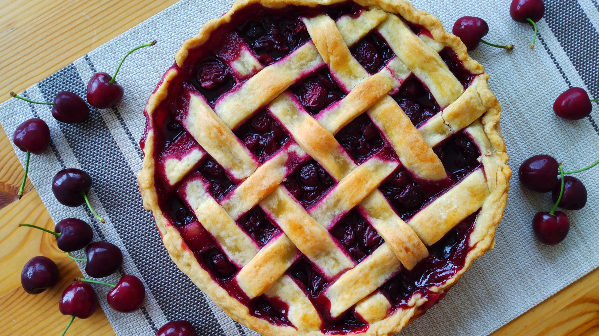

Tarta de Cerezas
- Preparación: 30 min
- Cocción: 50 - 60 min
- Porciones: 1 tarta de 25 cm de diámetro
INGREDIENTES
- 1 base para tarta con cobertura (ver mi receta aquí)
- 5 tazas de cerezas oscuras lavadas y sin semilla (1 kg de cerezas con semilla)
- ¾ taza (150 g) de azúcar
- 2 cucharadas (15 g) de fécula de maíz
- ¼ cucharadita de sal
- 2 cucharadas de jugo de limón
- ralladura de un limón
- ½ cucharadita de esencia pura de vainilla
- leche para barnizar
DESCRIPCIÓN
La tarta más bonita de mi recetario, y tal vez la más deliciosa. El inigualable sabor de las cerezas acidificadas con jugo de limón, junto con el suave sabor mantequilloso de la base son la combinación perfecta para despedir el verano. La mayoría de las recetas requieren cerezas agrias, que no son fáciles de conseguir. Esta receta ha adaptado la dulzura de las más comunes cerezas oscuras (o dulces) para esta fabulosa y hermosa tarta.
INSTRUCCIONES
- Sacar del refrigerador la base para tarta (que consta de dos mitades: la base y la cobertura) y dejar a temperatura ambiente por unos minutos para que se ablanden un poco. Aplanar una de las dos mitades con un rodillo para formar un disco de aproximadamente 30 cm de diámetro. Colocarlo sobre un molde para tarta de 23-25 cm de diámetro con ayuda del rodillo enharinado. Con un cuchillo bien afilado cortar los sobrantes del borde, si es necesario. Aplanar la otra parte de la base (la cobertura) hasta formar un círculo de aproximadamente 25 cm de diámetro y colocar este último sobre papel encerado en una base plana. Cubrir ambas partes con plástico y refrigerar.
- En un recipiente hondo, mezclar la azúcar, la fécula de maíz y la sal. Volcar las cerezas, el jugo y ralladura de limón y la esencia de vainilla. Mezclar para combinar bien los ingredientes. Dejar reposando a temperatura ambiente 10 minutos.
- Precalentar el horno a 220 °C (425 °F).
- Sobre la base para tarta que se ha refrigerado, esparcir uniformemente el relleno de cerezas. En este punto es necesario elegir si la tarta se cubrirá totalmente o si se hará una cubierta tipo red (como en la foto de arriba). De cualquier forma, cubrir cuidadosamente la tarta con el segundo disco. Si la tarta está totalmente cubierta es necesario hacer varias ranuras con un cuchillo bien afilado para dejar que el vapor escape durante el proceso de horneado.
- Barnizar la cobertura con leche fría y hornear por 15 minutos. Luego, bajar la temperatura del horno a 190 °C (375 °F) y seguir horneando hasta que la cobertura tenga un color ligeramente dorado y el relleno tenga burbujas y se vea espeso. Esto se logra aproximadamente después de 40-50 minutos adicionales de horneado. Si la cobertura se oscurece muy pronto, se puede cubrir con aluminio y continuar horneando.
- Dejar enfriar completamente la tarta antes de servirla.
Notas
- Esta receta es una ligera variación de Pretty Simple Sweet.